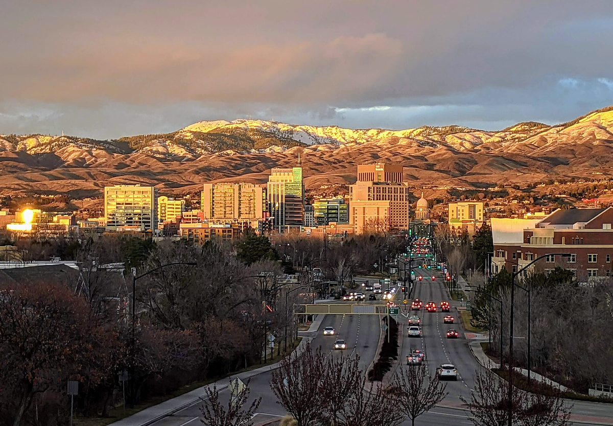

미국 보이시, 지열 난방을 저렴 공동주택 300가구 넘게로 넓힌다…마이크론, 부족 재원 250만 달러 출연

시 주택토지신탁 프로그램과 개발사 J. 피셔의 러스크 주택지구, 10%는 노숙에서 벗어나는 주민에게…블룸버그 자선재단 100만 달러로 지열 확장 시범, 세액공제·채권·시 재원 겹쳐 2027년 봄 착공 예정, '미국 도시 첫 시도'는 사업 주체 설명
미국 아이다호주 보이시에서 도시의 지열 난방 시스템을 넓혀 새로 짓는 저렴 공동주택 300가구 넘게에 열을 공급하는 사업이 반도체 기업 마이크론 테크놀로지(Micron Technology)로부터 250만 달러를 지원받았다. 대상은 개발사 J. 피셔(J. Fisher Co.)가 보이시시 주택토지신탁 프로그램(Housing Land Trust Program)과 손잡고 짓는 러스크 주택지구(Lusk Housing District)로, 마이크론의 돈은 다른 재원으로 채우지 못한 사업비 빈칸을 메우는 부족 재원(gap funding)으로 들어간다. 시는 올해 앞서 블룸버그 자선재단의 '시장 챌린지'에서 받은 100만 달러로 지열 시스템 확장을 시범 추진하고 있으며, 이 밖에 아이다호 주택금융공사를 통한 세액공제와 민간활동채권, 시와 시 개발공사(CCDC), J. 피셔의 투자가 함께 들어간다. 주택의 10%는 노숙에서 벗어나는 사람에게 배정되고 상가·거리 개선·대중교통 접근 개선과 공영 주차 건물도 함께 들어설 계획이며, 착공은 2027년 봄으로 예정돼 있지만 총사업비와 가구당 난방비 효과는 공개되지 않았다. 사업 주체들은 미국 도시가 지열로 저렴 공동주택에 열을 대는 첫 시도라고 설명했고, 로런 매클레인(Lauren McLean) 보이시 시장은 이번 투자로 수백 가구의 저렴주택에 청정 지열을 공급하는 데 한 걸음 더 다가갔다고 말했다.
시민에너지 관점
수백 가구 저렴주택의 난방을 지열로 대면서 땅은 시의 주택토지신탁이 맡고, 재원은 자선재단 100만 달러와 기업 250만 달러에 세액공제·채권·시 예산까지 여러 겹으로 모은 것은, 에너지 전환과 주거 복지를 한 사업으로 묶으려면 공공이 판을 짜야 한다는 것을 보여 준다. 기업 기부에 기대면 한 번으로 끝나고 입주민 부담은 다시 오를 수 있다는 우려가 있지만, 땅과 열 공급망이 공공의 손에 남아 있으면 기부금은 첫 공사비의 빈칸을 메우는 데 그치고 난방비는 공공이 관리하는 요금 안에서 지켜질 수 있다. 여기에 입주민과 지역 주민이 열 공급 운영과 요금 결정에 참여하는 조합 구조가 더해져야 '싼 집'이 '싼 난방'까지 오래 이어지고, 노숙에서 벗어난 10%의 가구도 겨울 난방비 걱정 없이 자리 잡을 수 있다. 국내에서도 공공택지 개발이나 토지임대부 주택처럼 땅을 공공이 쥔 사업부터, 열 공급 설비를 공공과 입주민 조합이 함께 소유하는 구조와 취약계층 우선 배정 비율을 첫 계획에 넣어야 한다.
출처: Renewable Energy Magazine 2026-10-29 Beth Anton 원문 보기
米ボイシ、地熱暖房を手頃な価格の集合住宅300戸超に拡大へ…マイクロン、不足財源250万ドルを拠出
市の住宅土地信託プログラムと開発会社J.フィッシャーによるラスク住宅地区、10%はホームレス状態から抜け出す人に…ブルームバーグ・フィランソロピーズの100万ドルで地熱拡張を試行、税額控除・債券・市の財源を重ね2027年春着工予定、「米国の都市で初の試み」は事業主体の説明
米アイダホ州ボイシで、市の地熱暖房システムを広げて新たに建てる手頃な価格の集合住宅300戸超に熱を供給する事業が、半導体大手マイクロン・テクノロジー（Micron Technology）から250万ドルの支援を受けた。対象は開発会社J.フィッシャー（J. Fisher Co.）がボイシ市の住宅土地信託プログラム（Housing Land Trust Program）と組んで建てるラスク住宅地区（Lusk Housing District）で、マイクロンの資金はほかの財源で埋めきれなかった事業費の穴を埋める不足財源（gap funding）として入る。市は今年これに先立ち、ブルームバーグ・フィランソロピーズの「メイヤーズ・チャレンジ」で得た100万ドルで地熱システム拡張を試行しており、このほかアイダホ住宅金融公社を通じた税額控除と民間活動債、市と市開発公社（CCDC）、J.フィッシャーの投資も加わる。住宅の10%はホームレス状態から抜け出す人に割り当てられ、商業スペースや街路の改善、公共交通へのアクセス改善、公営駐車場の建物も合わせて整備する計画で、着工は2027年春の予定だが、総事業費と1戸あたりの暖房費への効果は公表されていない。事業主体は、米国の都市が地熱で手頃な価格の集合住宅に熱を供給する初の試みだと説明し、ローレン・マクレーン（Lauren McLean）ボイシ市長は今回の投資で数百戸の手頃な住宅にクリーンな地熱を届けることに一歩近づいたと述べた。
市民エネルギーの視点
数百戸の手頃な住宅の暖房を地熱で賄い、土地は市の住宅土地信託が担い、財源は財団の100万ドルと企業の250万ドルに税額控除・債券・市の予算まで幾重にも集めたことは、エネルギー転換と住まいの福祉を一つの事業として結ぶには公共が枠組みを組まなければならないことを示している。企業の寄付に頼れば一度きりで終わり、入居者の負担が再び上がりかねないという懸念はあるが、土地と熱供給網が公共の手に残っていれば、寄付は最初の工事費の穴を埋めるにとどまり、暖房費は公共が管理する料金の中で守られうる。そこに入居者と地域住民が熱供給の運営と料金決定に加わる組合の仕組みが加わってこそ、「安い家」が「安い暖房」まで長く続き、ホームレス状態から抜け出した10%の世帯も冬の暖房費の心配なく暮らしを立て直せる。韓国でも、公共宅地の開発や土地賃貸型住宅のように土地を公共が握る事業から、熱供給設備を公共と入居者の組合が共同で所有する仕組みと、弱い立場の世帯の優先割り当て比率を最初の計画に盛り込むべきだ。
出典: Renewable Energy Magazine 2026-10-29 Beth Anton 原文を読む
美国博伊西将地热供暖扩大到300多户经济适用集合住宅…美光出资250万美元填补资金缺口
市住房土地信托计划与开发商J. Fisher的勒斯克住宅区，10%分配给摆脱无家可归状态的人…用彭博慈善基金会100万美元试点扩建地热，叠加税收抵免、债券和市财源，预计2027年春开工，“美国城市首次尝试”为项目方说法
美国爱达荷州博伊西一项扩建城市地热供暖系统、为300多户新建经济适用集合住宅供热的项目，获得半导体企业美光科技（Micron Technology）250万美元支持。对象是开发商J. Fisher（J. Fisher Co.）与博伊西市住房土地信托计划（Housing Land Trust Program）合作建设的勒斯克住宅区（Lusk Housing District），美光的资金作为缺口资金（gap funding），用来填补其他资金来源未能覆盖的项目费用。今年早些时候，市政府用从彭博慈善基金会“市长挑战赛”获得的100万美元试点扩建地热系统，此外还有通过爱达荷住房金融协会获得的税收抵免和私人活动债券，以及市政府、市开发公司（CCDC）和J. Fisher的投资。住房的10%将分配给摆脱无家可归状态的人，还计划同时建设商业空间、改善街道和公共交通可达性并兴建公共停车楼，预计2027年春开工，但总投资和每户供暖费用效果尚未公布。项目方称，这是美国城市首次尝试用地热为经济适用集合住宅供热；博伊西市长劳伦·麦克莱恩（Lauren McLean）表示，这笔投资让为数百户经济适用住房提供清洁地热又近了一步。
市民能源视角
用地热为数百户经济适用住房供暖，土地由市住房土地信托负责，资金则把慈善基金会的100万美元、企业的250万美元以及税收抵免、债券和市预算层层汇集起来，这说明要把能源转型和住房保障捆绑成一个项目，必须由公共部门来搭框架。有人担心依赖企业捐款只能一次性解决问题，住户负担可能再度上升；但只要土地和供热管网留在公共手中，捐款就只是填补首期工程的缺口，供暖费可以在公共管理的价格体系内得到保障。再加上住户和当地居民参与供热运营和定价的合作社结构，“便宜的房子”才能长久延伸为“便宜的暖气”，那10%摆脱无家可归状态的家庭也才能不为冬季取暖费发愁、安顿下来。在韩国，也应从公共住宅用地开发、土地租赁型住房这类土地掌握在公共手中的项目做起，把供热设施由公共部门与住户合作社共同拥有的结构，以及弱势群体优先分配比例写进最初的规划。
来源: Renewable Energy Magazine 2026-10-29 Beth Anton 查看原文
Boise to extend geothermal heat to more than 300 affordable homes as Micron gives $2.5 million in gap funding
Lusk Housing District, built by J. Fisher Co. with the city's Housing Land Trust Program, sets aside 10% of homes for people exiting homelessness; a $1 million Bloomberg Philanthropies award pilots the geothermal expansion, layered with tax credits, bonds and city funds, with groundbreaking expected in spring 2027; 'first U.S. city effort' is the project partners' description
A project in Boise, Idaho, to extend the city's geothermal heating system to more than 300 new affordable homes in a multifamily development has received $2.5 million from chipmaker Micron Technology. The money goes to the Lusk Housing District, which developer J. Fisher Co. is building in partnership with the City of Boise's Housing Land Trust Program, as gap funding to cover costs that other sources could not fill. Earlier this year the city won $1 million from the Bloomberg Philanthropies Mayors Challenge to pilot the expansion of its geothermal system, and the project also draws on tax credits and private activity bonds through the Idaho Housing and Finance Association as well as investment from the city, the Capital City Development Corporation (CCDC) and J. Fisher Co. Ten percent of the homes will be set aside for people exiting homelessness, and the plans also include retail space, improved streetscapes, better transit access and a public parking garage; groundbreaking is expected in spring 2027, but the total cost and the effect on household heating bills have not been disclosed. The partners describe it as the first effort by a U.S. city to heat multifamily affordable housing with geothermal energy, and Mayor Lauren McLean said the investment brings the city a step closer to delivering clean geothermal heat to hundreds of affordable homes.
Citizen Energy View
Heating hundreds of affordable homes with geothermal energy, with the land held through the city's housing land trust and the money layered from a $1 million philanthropic award, $2.5 million from a company, tax credits, bonds and city funds, shows that tying the energy transition to housing welfare in a single project requires the public sector to set the framework. There is a worry that relying on corporate donations means a one-off fix after which residents' costs creep back up, but as long as the land and the heat network stay in public hands, a donation only fills the gap in the first construction bill and heating costs can be protected within publicly managed rates. Add a co-operative structure in which residents and neighbours take part in running the heat supply and setting its price, and an affordable home can stay an affordably heated home for the long term, letting the 10% of households leaving homelessness settle in without dreading winter heating bills. In Korea, projects where the land stays in public hands, such as public housing site development and land-lease housing, should be the first to write into their initial plans heat-supply facilities co-owned by the public sector and residents' co-operatives, along with a priority quota for vulnerable households.
Source: Renewable Energy Magazine 2026-10-29 Beth Anton Read the original